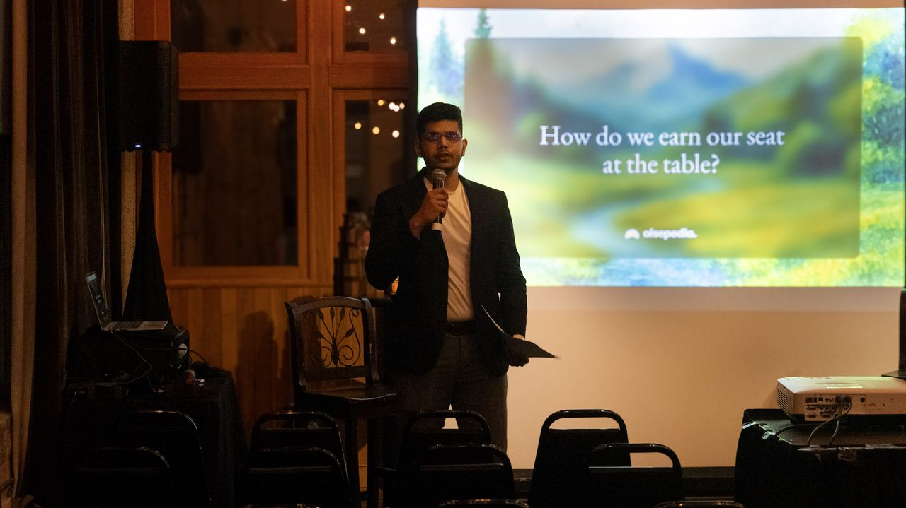

Field program at Aiseberg
Building an Enterprise Field Program in San Francisco
How a first field event put 36 senior product marketers in one room, with no events team and no paid promotion.
At Aiseberg, I organized PMM 2.0: Redefining the role for maximum impact, held on November 11, 2025.

The bet
A young company books a venue, buys some ads, puts its own executives on stage, and ends up with a half-full room of people who will never buy. The event becomes a cost center that produces a photo.
I started from the opposite assumption. If the right 30 people are in the room, the content almost does not matter. If the wrong 200 are, the best content is wasted. So the whole job was getting the room right, and the premise had to be a point of view, not a pitch: product marketing is changing shape, and the people who feel it most are senior product marketers themselves. That is a reason to gather them that has nothing to do with selling.
The panel
The design partner program included 13 publicly named practitioners, eight at Director level or above. One design partner joined the panel alongside three industry practitioners from outside the program. The four came from Atlassian, Meta Reality Labs, Google, and a background spanning Celona, Google, and Zscaler.
The design partner program and the wider practitioner network both helped me bring the right people into the room.
My responsibility
I organized the program, speakers, venue, and run of show, and worked with a colleague on promotion. Direct outreach focused on the topic and the panel.
What happened
Thirty-six senior product marketers showed up. The four panelists discussed the changing role of product marketing. Follow-up with attendees led to product conversations. The documented outcomes cover attendance and follow-up conversations.
Attendance and the panel are verified. The event page is preserved in an archived page (original site offline).
The lessons
- Build the network before you need the room. Build relationships with practitioners in and around the customer program before you need to convene them.
- Make it about the audience's problem, not your product. Nobody senior gives up an evening for a vendor pitch. They will give one up to argue about the future of their own work with peers they respect. The product shows up in the follow-up, not on stage.
- Assign clear responsibilities. I led the program and partnered on promotion. The first event showed us which parts could become a repeatable process.